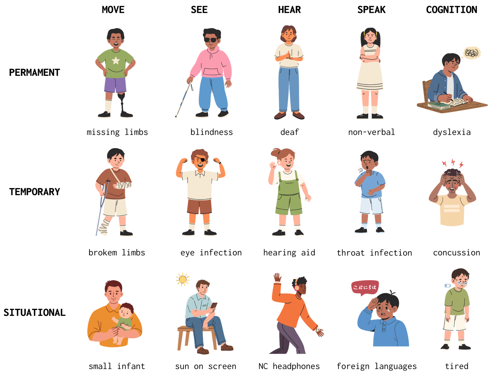
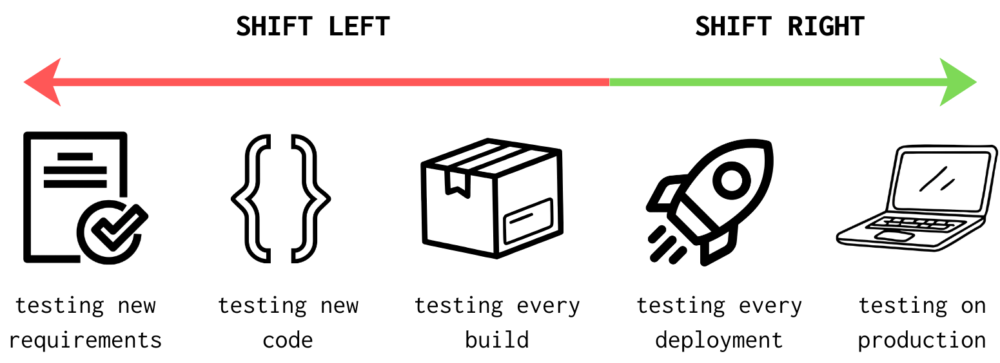
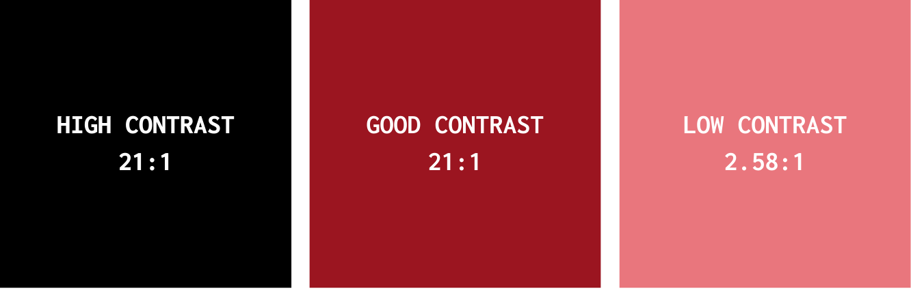
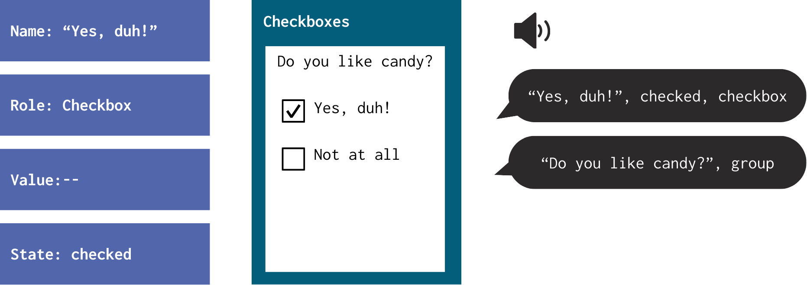
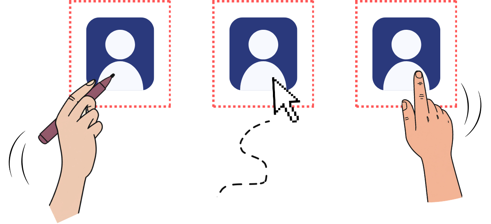
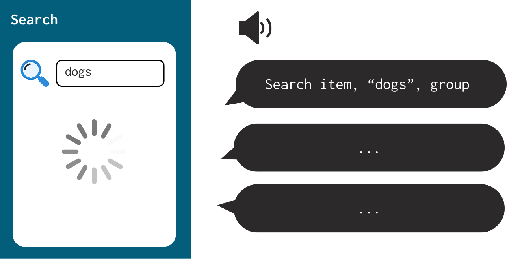
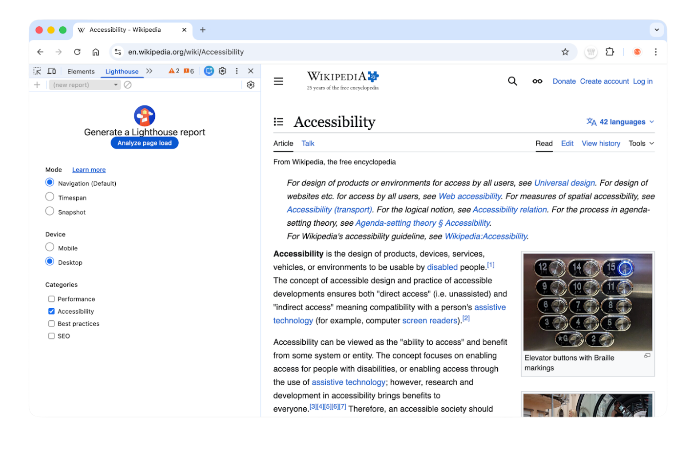
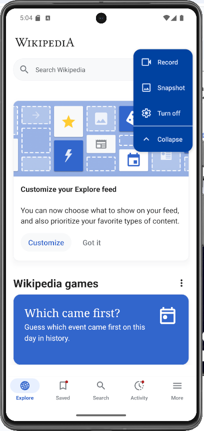

Accessibility is a human right, and in the context of software, it is a core quality attribute. In this codelab, you will learn how to perform automated audits to surface accessibility issues taking into account the Web Content Accessibility Guidelines, in both web and mobile environments, understanding why these issues matter, and learning how to interpret and fix them.
What will you learn?
By completing this codelab, you will:
- Understand the purpose and structure of WCAG2.2 (Web Content Accessibility Guidelines).
- Learn why accessibility is critical from technical, ethical, and legal perspectives
- Perform web accessibility audits using Lighthouse
- Perform mobile accessibility audits using Android Accessibility Scanner
- Identify common accessibility anti‑patterns
What do you need?
- Google Chrome
- Node (version 18 or later)
- An existing web project (any website)
- An Android phone or Android Emulator
- Basic knowledge of HTML/CSS and Android UI
When designing and making accessible software, we make sure any user, independent of physical, motor or visual impairments, can perceive, understand, navigate, and interact with our product.
This benefits everyone involved, not just users with permanent disabilities. In fact, we talk about disabilities in terms of a spectrum instead of conditions. There are permanent, temporary and situational disabilities, take a look at these examples.

Image 1: Spectrum of disabilities. Inspired by Microsoft's spectrum of disabilities
There are plenty of situations in the human experience in which any person would be disabled, hence creating an accessible app will allow for everyone to interact with it, independent of their situation. From the developers' perspective, accessibility can also improve code quality, usability, SEO, maintainability and finally legal compliance.
Shift-left

Image 2: Shift-left testing model. Adapted from a Paypal forum.
The concept of Shift Left refers to a preventive approach that seeks to integrate accessibility from the beginning of any design or development process, rather than at the end. This requirement is traditionally addressed in the final stages, which can lead to delays and increase costs. Moreover, by 'moving left' the inclusion of accessibility, we ensure that all aspects of the product or service are accessible from the beginning, minimizing issues and maximizing efficiency.
WCAG 2.2
WCAG (Web Content Accessibility Guidelines) are the international standard for accessibility. Primarily thought out for web environments, their principles are applicable to many other environments such as mobile; making them independent of technology or framework. Their latest version is 2.2, and you can find them here. The guidelines are based on 4 pillar principles.
Principle | Meaning |
Perceivable | Information and elements must be presented to users in ways they can perceive. |
Operable | Users must be able to interact with the interface. |
Understandable | Content and UI must be clear. |
Robust | Content must work with assistive technologies. |
Common accessibility barriers
The following are some common examples of problems that surface because accessibility is not taken into account. W3C provides success criteria that explain why each problem is important, and what to do to fix them.
Low color contrast
Insufficient contrast makes text and essential visuals hard to perceive for users with low vision or in bright environments. WCAG requires at least 4.5:1 for normal text, 3:1 for large text; non‑text UI and states ≥ 3:1. Perceivable, Guideline 1.4 Distinguishable — SC 1.4.3 Contrast (Minimum); SC 1.4.11 Non‑text Contrast.

Image 3: White text on different backgrounds to test contrast. Adapted from 10 pound gorilla
Missing alternative text
Screen reader users need meaningful text alternatives to understand images, icons, and other non‑text content; decorative images should be hidden from assistive tech. Perceivable, Guideline 1.1 Text Alternatives — SC 1.1.1 Non‑text Content.

Image 4: Alt text do's and dont's. Adapted from Reliablesoft
Interactive elements without accessible names
Assistive technologies rely on a control's name, role, and state/value. Unlabeled buttons/links or custom widgets that don't expose these break comprehension and operability. Robust, Guideline 4.1 Compatible — SC 4.1.2 Name, Role, Value.

Image 5: Screen reader expected interaction. Adapted from AAArdvark
Poor keyboard navigation
Many users navigate only by keyboard. All functionality must be operable via keyboard with a logical focus order and a visible focus indicator. Operable, Guideline 2.1 Keyboard Accessible — SC 2.1.1 Keyboard. Guideline 2.4 Navigable — SC 2.4.3 Focus Order, SC 2.4.7 Focus Visible.

Image 6: Keyboard navigation example. Adapted from AAArdvark
Touch targets that are too small
Targets that are too small or too close increase mis‑taps, especially for users with limited dexterity or on mobile. WCAG 2.2 requires targets of at least 24×24 CSS px for pointer inputs, and 44x44 CSS px for touch inputs or sufficient spacing to achieve an equivalent hit area. Operable, Guideline 2.5 Input Modalities — SC 2.5.8 Target Size (Minimum).

Image 7: Targets for different input modalities. Adapted from Medium
Dynamic content not announced to screen readers
Status changes, such as success, errors, or loading, that appear without moving focus must still be conveyed to assistive technologies; otherwise, users miss critical feedback. Robust, Guideline 4.1 Compatible — SC 4.1.3 Status Messages.

Image 8: Status is loading, but no announcement on screen reader.
What is Lighthouse?
Lighthouse is an automated auditing tool built into Chrome DevTools that evaluates Performance, Best Practices, SEO and Accessibility.
Running a simple audit
We will run an accessibility audit on a website. Pick any website you like. For the purposes of this example, we will run these audits inside Wikipedia.
- Open your website in Google Chrome
- Open the developer console, you can do this pressing the F12 key
- Go to the Lighthouse tab.

Image 9: Lighthouse Tab
There are multiple options in this panel. For starters, there are three modes.
- Navigation mode analyzes a single page load. This will analyze accessibility immediately after page load, without checking page transitions.
- Timespan mode analyzes an arbitrary period of time, typically containing user interactions.
- Snapshot mode analyzes the page in a particular state. This is useful for finding accessibility issues deep within SPAs or complex forms, or best practices.
Use Snapshot for in‑state a11y, Navigation for page‑load; Timespan doesn't produce the Accessibility category. You can also choose the device, which will essentially change the viewport size and user agent, and finally the categories for the audit. We encourage you to try them out on your own. However for the purposes of this codelab we will focus only on Accessibility.
- For this first trial, we will run an audit in Navigation mode, for desktop. Let's click Analyze page load. After a few seconds, we will receive a report.

Image 10: Lighthouse Audit result
The report will include suggestions. Each suggestion is clickable, and points out where exactly in the website the error is present, and why it is important. Lighthouse will first surface the problematic elements first, with a red triangle (🔺) graphic, then the elements that need to be checked manually with a black circle (○), and finally the elements that passed the audit and accomplish a11y effectively with a green square ( 🟩 ).
For instance, let's take a look at the first recommendation. It is telling us there are two images in the website that do not offer alt text. This is one of the first principles in WCAG. In guideline 1.1, it indicates non-text content should always provide text alternatives so that it can be changed into other forms people need, such as large print, braille, speech, symbols or simpler language.
But let's also take a look at what Wikipedia does well. ARIA, which is short for Accessible Rich Internet Applications, are a set of semantics that allow an author to properly convey information to assistive technologies inside the code, particularly inside HTML and SVG files. An ARIA label, for instance, is a way of labelling an object, so it is recognizable in its utility, rather than its form. An example of a well implemented ARIA label is the following.

Image 11: Correct ARIA labelling
The icon shown is composed of three dots. However, this button is useful in Wikipedia to show user options, such as logging in, creating an account or donating. The ARIA label does a great job at describing the function, instead of just saying "three dots", it says "Personal tools" because that would leave our users confused on the functionality of the button. All of this is pointed out in the Lighthouse review as well.
Running a simple user flow using the Lighthouse API
Lighthouse provides a User Flows API (since v10+) to measure accessibility and performance during real interactions (navigation, timespan, snapshot). This approach allows for detecting issues not only on page load, but during scroll, search, dynamic UI updates, and more.
First, we will create a new directory for our project. Inside said directory, run:
npm init -y
npm install Lighthouse puppeteer
Then, create a new file that will have the logic of our script. We called it flow.js For starters, we import the node modules we just installed.
import fs from 'fs';
import puppeteer from 'puppeteer';
import {startFlow} from 'Lighthouse';We will run the simulated user flow inside the same example used before. Therefore, we define the website we want to visit, and an auxiliary sleep function (this is helpful for letting the browser load)
const BASE_URL = 'https://www.wikipedia.org';
const sleep = ms => new Promise(resolve => setTimeout(resolve, ms));Inside a main function, which we will call run(), we will define the simulation. Here, we will create a puppeteer browser instance, a page instance and a flow instance. The latter refers to the Lighthouse API method for starting the audit. We define the browser instance as headless: false, because we want to be able to see the automation happening in real time,
async function run() {
const browser = await puppeteer.launch({
headless: false,
defaultViewport: null,
args: ["--start-maximized"],
});
const pages = await browser.pages();
const page = pages[0] ?? (await browser.newPage());
page.setDefaultTimeout(15000);
const flow = await startFlow(page, {
name: "Wikipedia Audit Example",
});
}Then we will define each step in the simulation. We will define it as follows:
- Open the website
- Find the search input and type "Hello world program"
- Scroll down
First, going to the page and doing a snapshot. Each time we perform an action, taking an action is recommended, so that we can see the audit in that particular point in time.
await page.goto(BASE_URL, { waitUntil: "networkidle0" });
await flow.snapshot({ stepName: "Page loaded" });Second, searching the query. This is the standard way in puppeteer for waiting for results to load. For more complex flows, check the puppeteer documentation.
await page.waitForSelector("#searchInput");
await page.click("#searchInput");
await page.keyboard.type("Hello world program", { delay: 40 });
await flow.snapshot({ stepName: "Typed query" });
await Promise.all([
page.waitForNavigation({ waitUntil: "networkidle2" }),
page.keyboard.press("Enter"),
]);
await flow.snapshot({ stepName: "Search results or article loaded" });Third, we scroll the result and take snapshots.
await page.evaluate(() => {
window.scrollBy(0, Math.floor(window.innerHeight * 1.5));
});
await sleep(800);
await page.evaluate(() => {
window.scrollBy(0, Math.floor(window.innerHeight * 1.5));
});
await sleep(800);
await flow.snapshot({ stepName: "Scrolled page" });And finally, we save the report in an html file that can be analyzed later, and close the browser.
const reportHtml = await flow.generateReport();
fs.writeFileSync("flow.report.html", reportHtml);
await browser.close();To run our main function, include this snippet at the end.
run().catch((e) => {
console.error(e);
process.exit(1);
});To execute this script, use node flow.js. This is what the process should look like. And the report will look pretty similar to what we had done before, but now you can control Lighthouse programmatically, which is extremely useful for QA testing.

Image 12: Lighthouse Flow Audit result
Mobile accessibility follows the same WCAG principles but introduces touch and gesture considerations. Here we are usually concerned with touch target size, content descriptions, focus order (for keyboard support) and screen reader compatibility.
What is Android Accessibility Scanner?
Android Accessibility Scanner is a tool that scans screens and suggests accessibility improvements. It checks for missing content descriptions, small touch targets, low contrast and/or unlabeled controls.
Running a simple audit
We will run an accessibility audit on an app. Pick any app you like. For the purposes of this example, we will run these audits inside Wikipedia again.
On your android phone,
- Download Android Accessibility Scanner from the Play Store.
- Open the app. Once you set it up, a blue squared button with a checkmark will appear on your screen constantly, this is our gateway to all the functionalities of Accessibility Scanner.

Image 13: Accessibility Scanner tools
- Once inside your app, click on the options for scanning. Accessibility Scanner allows us to either record a user flow or send a snapshot of the current state of the app. For starters, let us look at a snapshot.


Image 14: Accessibility Scanner result
As we can see, the scanner will display and highlight all the problematic elements in our app, and if we tap on each element we can understand why it has problems and how to potentially fix them. For instance, (touch target explanation in terms of WCAG). Finally, this mode will not allow us to have an overall score like in Lighthouse. You can share these results as well.
- Now looking into the recording. This audit will work very similarly to the snapshot mode, however, it will include all the pages of the app we visit while the screen recording is on.


Image 14: Accessibility Scanner recording results
Again, the scanner will display and highlight all the problematic elements in our app, and if we tap on each element we can understand why it has problems and how to potentially fix them.
All of the audits performed will be saved on device, and are available inside the Accessibility Scanner app directly. When performing these checks, make sure to perform a lot of the workflows your user would perform, and try changing various parameters, like screen zoom, orientation, and other conditions.

Image 14: Accessibility Scanner history
More accessibility resources
We have seen how to detect issues, but how can we solve them? Based on the framework you are using, there are plenty of resources for thinking about accessibility from the beginning of the development. Encompassing tools, documentation and different software components, here is a list of resources you might want to look into.
- React: https://react-aria.adobe.com/, https://martijnhols.nl/blog/accessibility-essentials-every-front-end-developer-should-know
- Wordpress: https://deliciousbrains.com/using-aria-roles-for-accessibility-in-wordpress/
- Drupal: https://www.drupal.org/docs/getting-started/accessibility
- Angular: https://angular.dev/best-practices/a11y
- Svelte: https://svelte.dev/docs/kit/accessibility
References
Version 1.0 - March 10, 2026
Juan Diego Yepes Parra | Author |
Camilo Escobar Velasquez | Proofreader |
Mario Linares Vasquez | Proofreader |